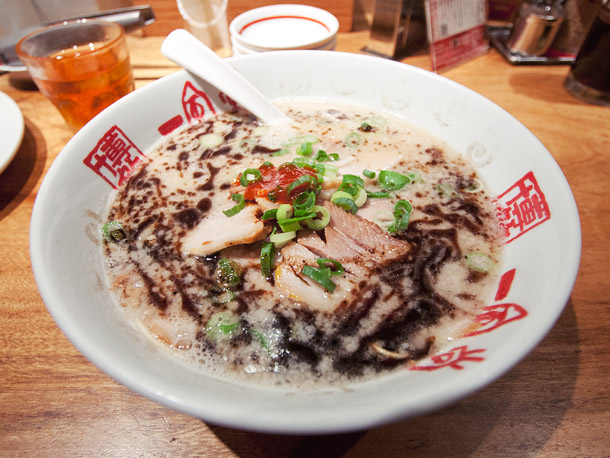

Hakata Style

Hakata Ramen comes from Fukuoka, a prefecture in Japan's southern island of Kyushu famous for its pork dishes. Hakata is the home of tonkotsu, the no-holds-barred meatsplosion of porcine pleasure. While many ramen broths are gently simmered to develop nuanced, subtle flavors, tonkotsu broth is cooked at a rolling boil, giving the soup its rich body, opaque appearance, and rich texture. It's insanely popular and was the primary driver of the ramen boom in New York over the last decade or so. Fukuoka, of course, is the birthplace of the widely popular Ippudo chain of ramen-ya. In Hakata, the tonkotsu broth is generally seasoned with shio, in order to preserve the milky white color of the soup, though both shoyu and miso variations are not uncommon. Some shops will serve shoyu tare (a seasoned soy sauce mixture) as a table side condiment. Typical toppings include thin slices of chashu, wood-ear mushroom, beni-shoga, and spicy mustard greens—all powerfully flavored or textured stuff that can stand up to the intense pork flavor. Crushed sesame seed and crushed garlic can be served table side to add to taste.